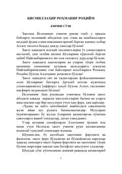

HVIslomda zakot ibodati, uning shartlari va tartiblari haqida batafsil diniy-huquqiy qo'llanma.
Ushbu kitob Islom dinining uchinchi рукни bo'lgan zakot ibodatiga bag'ishlangan bo'lib, uning shartlari, farz bo'lishi va taqsimlanish tartiblarini batafsil tushuntiradi. Asarda chorva mollari, ziroat mahsulotlari, pul va tijorat mollaridan zakot chiqarish qoidalari haqida keng ma'lumot beriladi. Shuningdek, zakot oluvchi va beruvchining odoblari hamda zamonaviy masalalar yoritib berilgan.